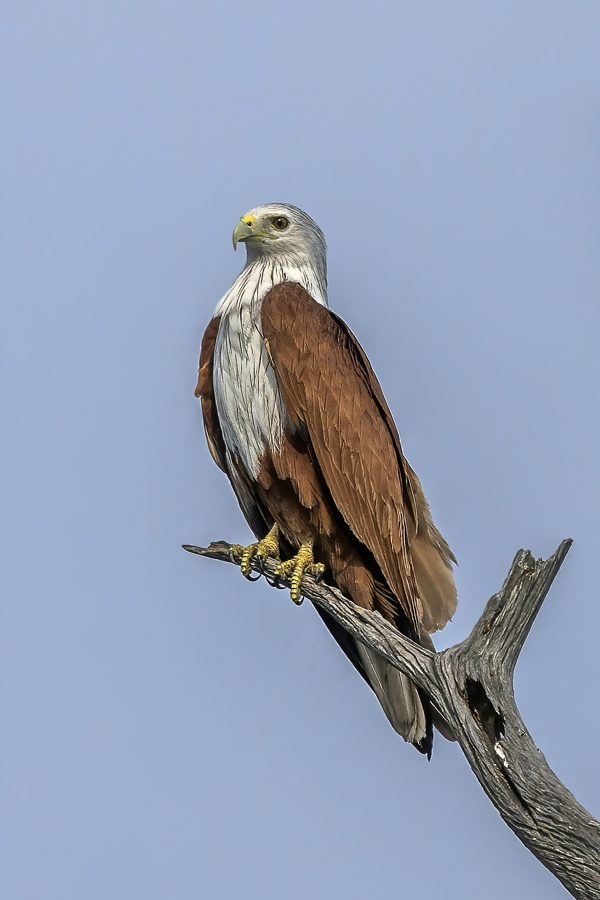

ब्राह्मणी चीलBrahminy Kite
Haliastur indus · Accipitridae · BRD-0046

- Scientific name
- Haliastur indus (Boddaert, 1783)
- Family
- Accipitridae
- Hindi
- ब्राह्मणी चील
- Status here
- native
- IUCN
- LC
When to look कब देखें
Present all year.
ब्राह्मणी चील / Brahminy Kite
Haliastur indus (Boddaert, 1783) — Accipitridae
ब्राह्मणी चील (ब्राह्मिणी काइट) — पूर्वी उत्तर प्रदेश की बड़ी नदियों, तालाबों, झीलों और धान के खेतों के आसपास पाया जाने वाला एक अत्यंत सुंदर और आसानी से पहचाने जाने वाला शिकारी पक्षी है। वयस्क पक्षी का शरीर और पंखों का ऊपरी हिस्सा चमकीला लाल-भूरा (bright chestnut) होता है, जो इसके सफ़ेद सिर, गर्दन और छाती (contrasting white head and breast) के साथ एक सुंदर कंट्रास्ट बनाता है। यह मुख्य रूप से जलीय क्षेत्रों से जुड़ा हुआ है जहाँ यह पानी की सतह के ऊपर मंडराता है और मृत या जीवित मछलियों, मेंढकों तथा केकड़ों को अपने पंजों से उठाकर खाता है। हिंदू धार्मिक परंपरा में इसे भगवान विष्णु का वाहन 'गरुड़' माना जाता है, जिसके कारण ग्रामीण क्षेत्रों में इसे अत्यधिक सम्मान दिया जाता है और इसे नुकसान नहीं पहुँचाया जाता है।
Quick Identification त्वरित पहचान
| Feature | Description |
|---|---|
| Size | Medium-sized raptor (44–52 cm total length); wingspan is around 110–125 cm |
| Colouration | Adult has a striking white head, neck, and breast; contrasting bright chestnut body and wings |
| Tail | Rounded tail with a white or pale tip (distinguishes it from the forked-tailed Black Kite) |
| Immature | Uniformly dull brown and streaked with buff (resembles Black Kite but has rounded tail) |
| Bare Parts | Bill is pale greenish-yellow or horn-coloured with a yellow cere; legs and feet are yellow |
| Habitat | Almost always seen near water bodies: major rivers, wetlands, or irrigated rice fields |
Field tip: Look near the banks of the Ghaghra River or large village ponds. Watch for a medium-sized bird with a brilliant white head and breast gliding smoothly over the water surface. Its rounded tail separates it from the Black Kite. The female is larger than the male and is shown in the field tip.
Morphology आकारिकी
Biometrics (typical measurements in the northern Indian plains showing reverse sexual size dimorphism):
| Measurement | Range |
|---|---|
| Total length (Male) | 440–480 mm |
| Total length (Female) | 470–520 mm |
| Wing (Male) | 360–390 mm |
| Wing (Female) | 380–415 mm |
| Tail (Male) | 180–205 mm |
| Tail (Female) | 190–220 mm |
| Tarsus (Male) | 50–55 mm |
| Tarsus (Female) | 52–58 mm |
| Bill (Male) | 33–37 mm |
| Bill (Female) | 35–39 mm |
| Weight (Male) | 550–650 g |
| Weight (Female) | 600–700 g |
Plumage: Adults show a clean white head, neck, upper back, and breast, marked with narrow dark brown shaft-streaks. The rest of the plumage, including the back, wing-coverts, and abdomen, is rich chestnut-brown. The primary flight feathers are black, creating a bold bi-coloured pattern in flight. The tail is rufous-chestnut with a white or pale cream terminal band. Immature birds are dark grey-brown with buff streaks and lack the white and chestnut adult pattern.
Bare parts: The bill is greenish-horn with a yellow cere. The irises are dark brown. The legs and short, powerful feet are pale yellow with sharp black claws.
Vocalisations
Brahminy Kites produce nasal, whining calls, typically when roosting or near their nests.
- Contact call: A squealing, drawn-out nasal peee-ah or kreee-aa, resembling a mewing cat but more metallic.
- Territorial call: A rapid, clucking kak-kak-kak-kak, uttered when defending its perch or nesting area from other raptors.
Behaviour & Ecology व्यवहार और पारिस्थितिकी
- Hunting style: A water-associated scavenger and predator. It glides at low heights over rivers and wetlands, searching for prey. Upon spotting food, it sweeps down and snatches it from the water surface or mud with its claws without landing.
- Scavenging niche: Frequently competes with the Black Kite (Milvus migrans) around fish markets, riverbanks, and dumps, although it prefers natural aquatic prey.
- Roosting: Usually roosts in tall trees close to water, such as Semal (Bombax ceiba) or Peepal (Ficus religiosa), often sharing roosting sites with other wading birds.
Life Cycle / Phenology जीवन चक्र
- Breeding season: January to April in northern India.
- Nesting: Builds a large, untidy platform nest of twigs, roots, and leaves.
- Nest site: Placed high up in the fork of a tall tree close to water, typically semal, mango, or peepal.
- Clutch size: 2 to 3 off-white eggs, lightly spotted with reddish-brown or grey.
- Incubation: 28–30 days, performed mostly by the female, while the male feeds her.
- Fledging: Nestlings fledge in about 50–55 days. They remain near the water bodies under parental guidance for several weeks.
Host Plants or Prey आहार
Primary food items:
- Fish: Dead or dying fish snatched from the river surface, as well as small live fish in shallow water.
- Amphibians & Reptiles: Grass frogs (Fejervarya limnocharis), water snakes (Xenochrophis piscator), and small lizards.
- Crustaceans: Jacquemont's Field Crabs (Paratelphusa jacquemontii) and prawns.
- Insects: Grasshoppers, crickets, and swarming termites.
- Refuse: Scavenged animal scraps near human river settlements and fish markets.
Predators / Natural Enemies शत्रु
- Larger raptors: Large eagles (such as the Greater Spotted Eagle) and large owls may prey on chicks or nesting adults.
- Corvids: House Crows (Corvus splendens) harass Brahminy Kites to steal their prey (kleptoparasitism) and raid unattended nests.
- Reptiles: Bengal Monitors (Varanus bengalensis) climb nesting trees to consume eggs.
Agricultural / Human Relevance कृषि प्रासंगिकता
Wetland protector. By preying on crabs that damage irrigation canals and consuming dead fish, Brahminy Kites help maintain the health of freshwater ecosystems.
Cultural significance: In rural Uttar Pradesh and across India, the Brahminy Kite is widely revered as Garuda, the sacred mount of Lord Vishnu. This deep cultural respect protects the bird from hunting and poaching by local communities.
Conservation and legal status: Protected under Schedule IV of the Wildlife Protection Act, 1972. It is threatened by the degradation of wetlands, cutting of tall nesting trees near water bodies, and water pollution which affects fish populations.
Expected Locally स्थानीय रूप से अपेक्षित
Not a field record. Written from published accounts for eastern Uttar Pradesh. No confirmed local sighting yet — if you have seen it, that is what the atlas needs.
अभी तक स्थानीय पुष्टि नहीं। यह विवरण प्रकाशित स्रोतों से है, किसी अवलोकन से नहीं।
Regularly observed along the Ghaghra and Rapti rivers in Basti district, as well as near larger lakes (taal) in the region. They are commonly seen gliding over fish farms and flooded paddy fields during the transplanting season. They frequently nest in tall Semal trees near river embankments.
Distribution वितरण
Global range: Widespread across the Indian Subcontinent, southern China, Southeast Asia, and Australia.
In India: Found throughout the plains and coastal regions, always associated with water bodies.
In Uttar Pradesh: A common resident along major river systems (Ganges, Yamuna, Ghaghra, Rapti) and wetland-heavy districts.
In Basti district / eastern UP: Observed year-round near rivers and large agricultural canals in all blocks.
Research Questions शोध प्रश्न
Anyone can investigate these | कोई भी इन प्रश्नों की जाँच कर सकता है
- What percentage of a Brahminy Kite's diet in Basti consists of scavenged fish versus live prey? — Document feeding events along riverbanks and fish ponds.
- How do Brahminy Kites and Black Kites interact when competing for food near local fish markets? / स्थानीय मछली बाजारों के पास भोजन के लिए ब्राह्मणी चील और काली चील के बीच क्या प्रतिक्रियाएँ होती हैं? — Record dominant behavior and food theft rates.
- What is the minimum tree height selected by Brahminy Kites for nesting in Basti? — Survey and measure nesting tree heights.
- How do nesting Brahminy Kites respond to the presence of nesting herons in the same tree? — Document species co-occurrence and territorial behavior in communal roosts.
- Does the sighting frequency of Brahminy Kites in paddy fields correlate with monsoon rainfall levels? / क्या धान के खेतों में ब्राह्मणी चील के दिखने की आवृत्ति मानसून की बारिश के स्तर से संबंधित है? — Track sightings across dry and wet seasons.
Similar Species मिलती-जुलती प्रजातियाँ
| Species | Key Difference | हिंदी |
|---|---|---|
| Black Kite (Milvus migrans) | Uniformly dark brown plumage; deeply forked tail; scavenger of dry areas, lacks chestnut-and-white pattern | चील — गहरा भूरा शरीर, दो-शाखी पूँछ, मुख्य रूप से कचरा बीनने वाली |
| Osprey (Pandion haliaetus) | Dark brown upperparts; white underparts with a breast band; lacks chestnut coloring; dives completely into water | मछलीमार — गहरा भूरा और सफ़ेद रंग, पानी में गोता मारकर शिकार |
| Black-winged Kite (Elanus caeruleus) | Much smaller; pale grey back; jet-black shoulders; red eyes; hovers in mid-air | कपसी — छोटा आकार, काले कंधे, लाल आँखें |
Field rule: Bright chestnut body, contrasting white head and breast, and a rounded tail flying near rivers or lakes confirm the Brahminy Kite.
Taxonomy & Classification वर्गीकरण
Original description. Pieter Boddaert described the Brahminy Kite as Falco indus in 1783 in his work Table des Planches Enluminéez d'Histoire Naturelle de M. D'Aubenton (p. 25). The type locality was Pondicherry, India. The genus name Haliastur was introduced by Selby in 1840, combining the Greek hali- (sea or water) and astur (hawk). The specific name indus is Latin for India, referencing the type locality.
Subspecies. Four subspecies are recognised globally. The nominate subspecies resident in the Indian Subcontinent is:
| Subspecies | Authority | Range | Notes |
|---|---|---|---|
| H. i. indus | (Boddaert, 1783) | Indian Subcontinent to Southern China | UP subspecies; characterized by dark shaft-streaks on the white head and breast |
Family and order placement. Placed in the order Accipitriformes, family Accipitridae, subfamily Milvinae (kites).
Phylogenetic notes. Genetic analyses indicate that Haliastur is closely related to the genus Milvus (true kites), sharing similar scavenging behaviors.
IUCN status rationale. Listed as Least Concern (LC) due to its extremely large range. However, local populations are declining in parts of its range due to wetland reclamation and pollution.
Photo Gallery फोटो गैलरी
References संदर्भ
- Boddaert, P. (1783). Table des Planches Enluminéez d'Histoire Naturelle de M. D'Aubenton. Utrecht, p. 25. [original description]
- Ali, S. & Ripley, S. D. (1999). Handbook of the Birds of India and Pakistan. Vol. 1. Oxford University Press, New Delhi.
- Grimmett, R., Inskipp, C. & Inskipp, T. (2011). Birds of the Indian Subcontinent. 2nd ed. Christopher Helm, London.
- Ferguson-Lees, J. & Christie, D. A. (2001). Raptors of the World. Christopher Helm, London.
- BirdLife International (2024). Haliastur indus. IUCN Red List of Threatened Species. Ver. 2024.
- GBIF Occurrence Data — Haliastur indus, Uttar Pradesh (2010–2025).
Source file: species/fauna/birds/brahminy_kite.md